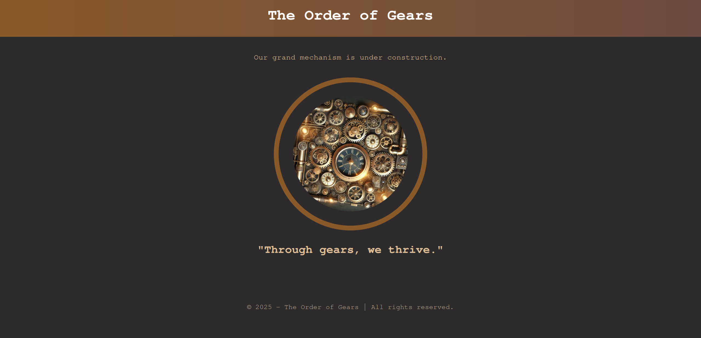
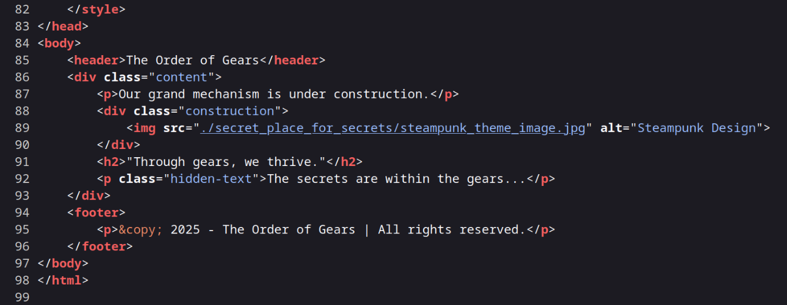
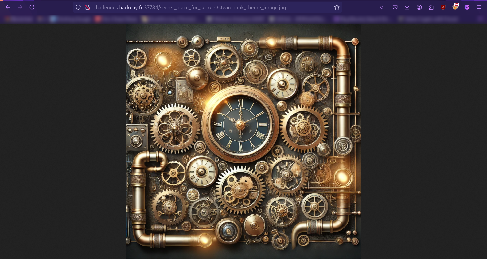
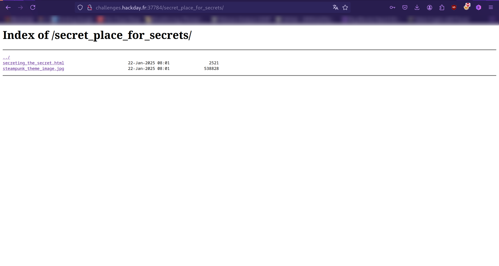
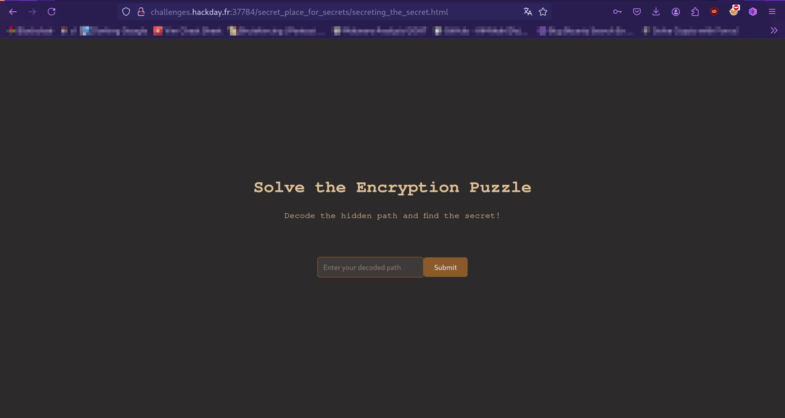
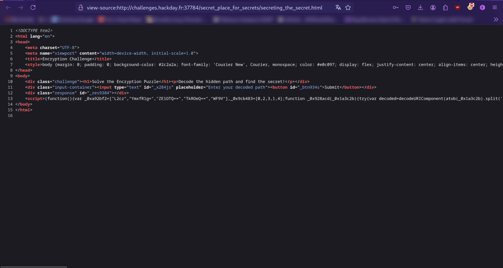
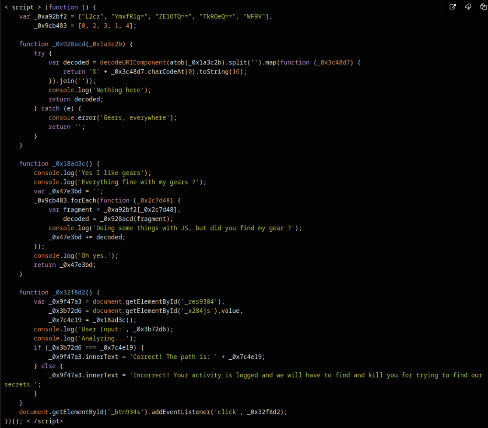
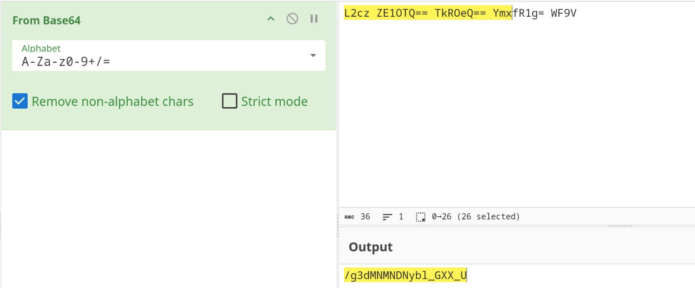
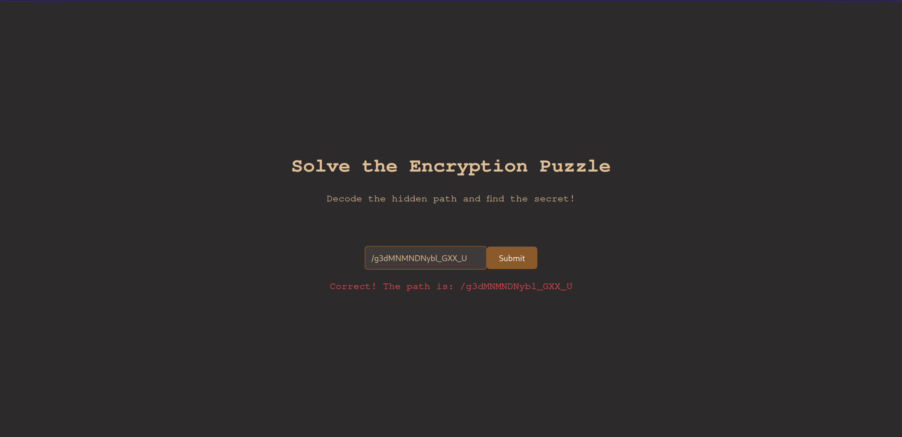
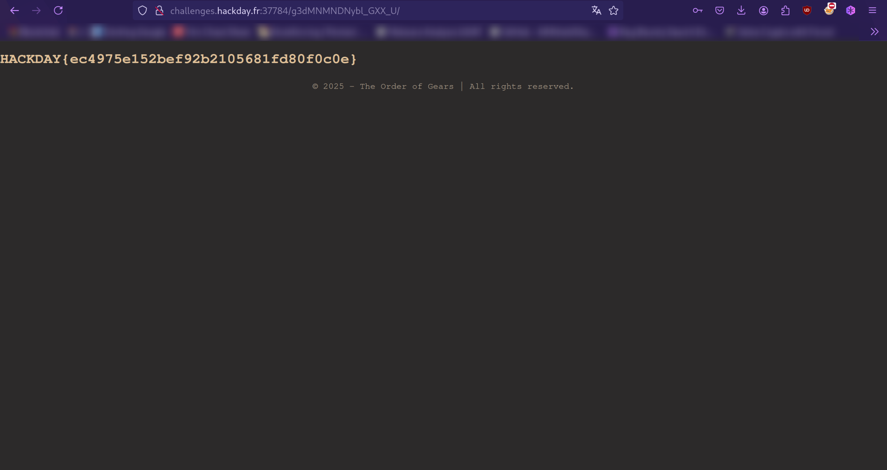

The Watchful Gears: Uncover the Secrets Within
This website clearly hides a lot of things... be careful, it seems the administrator of this website is monitoring activity! Proceed slowly but surely...

Writeup
Here is the step by step solution






It appears that there are 2 variables, one with base64 values (_0xa92bf2) and the other with table indexes (_0x9cb483). At the end we see that the table of values is called and compared in a precise order (the values of the 2nd table [0, 2, 3, 1, 4]). We will then assemble the values in base64 following this order.


Looks good but we still haven't found the flag. They said that we have the PATH probably a web path right ?

Flag
HACKDAY{ec4975e152bef92b2105681fd80f0c0e}